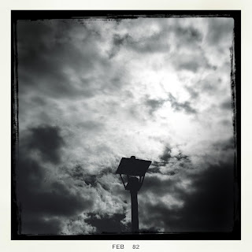

Recovered weblog entry
Some update is better than none

Even if it's not grammatically correct. Lens: Americana
Film: BlacKeys B+W

Recovered weblog entry

Even if it's not grammatically correct. Lens: Americana
Film: BlacKeys B+W